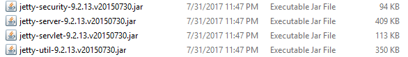

配置 CORS
Cross-origin resource sharing (CORS) is a mechanism that allows restricted resources (e.g. fonts) on a web page to be requested from another domain outside the domain from which the first resource was served.
----From Wikipedia
CORS也叫“跨域资源共享”，是一种机制用于在服务器之间共享限制资源（比如字体，图片等）， 我们这里需要给GeoServer开启CORS，以便发布的WMS服务能够被其他服务器访问，获取瓦片图像。
如果没有开启CORS，则在访问WMS服务时会根据浏览器不同得到类似的错误提示
XMLHttpRequest cannot load http:***************.
No 'Access-Control-Allow-Origin' header is present on the requested resource.
Origin 'null' is therefore not allowed access.
查看服务器
在上文中讲到我使用的是Windows Installer， 该版本的GeoServer自带Jetty服务器， 若不是此版本，则需要清楚当前版本使用的是什么服务器（通常是Tomcat）， 本文只讲述关于Jetty服务器的CORS配置，若是其他服务器，就找对应服务器的CORS配置即可。
Jetty 配置 CORS
配置CORS需要找到两个路径
../GeoServer 2.11.2/webapps/geoserver/WEB-INF/web.xml../GeoServer 2.11.2/webapps/geoserver/WEB-INF/lib
其中../GeoServer 2.11.2就是GeoServer的安装目录。
在../GeoServer 2.11.2/webapps/geoserver/WEB-INF/web.xml文件中，找到
<!-- Uncomment following filter to enable CORS -->
<filter>
<filter-name>cross-origin</filter-name>
<filter-class>org.eclipse.jetty.servlets.CrossOriginFilter</filter-class>
</filter>
<!-- Uncomment following filter to enable CORS -->
<filter-mapping>
<filter-name>cross-origin</filter-name>
<url-pattern>/*</url-pattern>
</filter-mapping>
按照注释将下方的标签取消注释后就是上方的结果。
接下来要下载jetty-servlets,
下载的版本根据实际情况，我的../GeoServer 2.11.2/lib目录下找到了

可以看出我应该下载的是9.2.13.v20150730版本，下载后得到jetty-servlets-9.2.13.v20150730.jar文件，
将它拷贝到../GeoServer 2.11.2/webapps/geoserver/WEB-INF/lib中。
重启服务
配置完成后需要重启GeoServer服务以应用CORS，若选的手动安装，只需运行Stop GeoServer再运行Start GeoServer；
若以服务形式安装的GeoServer，则在Windows服务中重启服务即可。